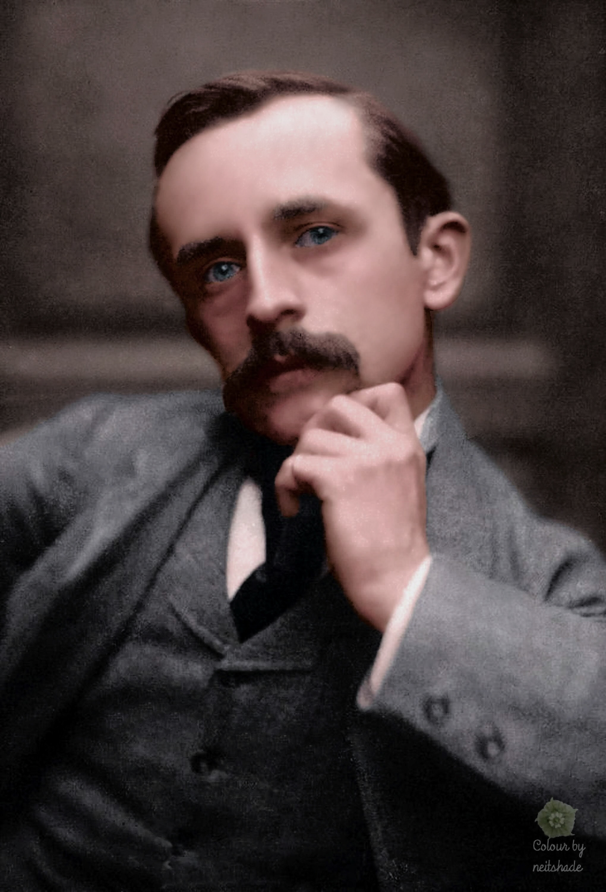
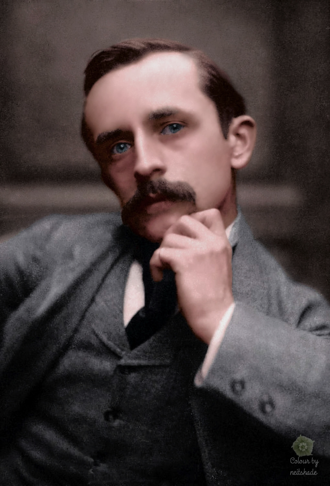

My hobby is reading interesting and knowledgeable books in my free time. Reading makes me relaxed and calm. I can also learn new vocabulary items. Then I can further improve my English. Moreover it can give me unlimited imagination.
Through books reading nobody can feel alone and disturb. I think this habit is more precious than gold or other precious stones of the world. It provides us high level of knowledge, noble thoughts and ideas to work in many fields. Good and interesting books are like best friends of the one who like to read. The one who do not have this habit may possess worldly wealth but he/she would always be poor because of the lack of wealth of true knowledge. The habit of reading books can be acquired at young age by anyone.
Click on the pictures to view my inspiration
 
